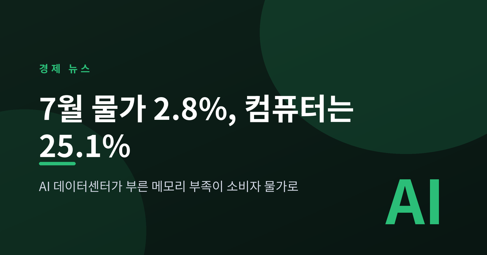
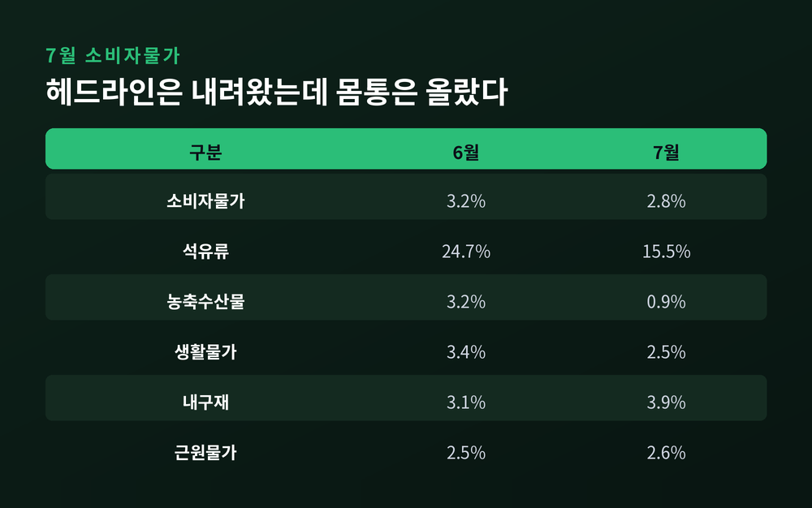
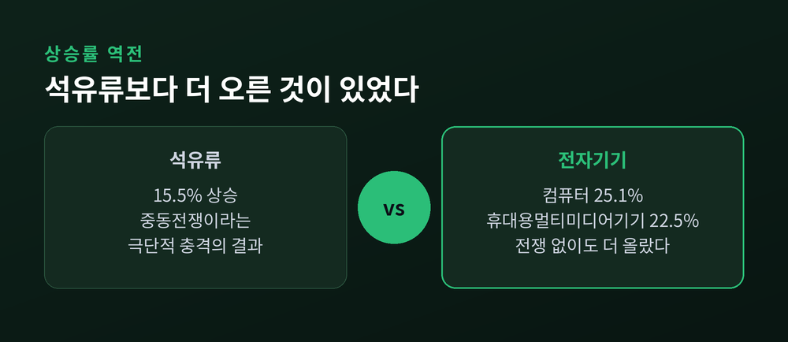
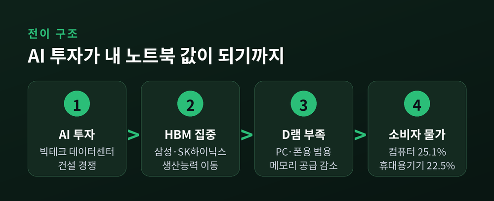
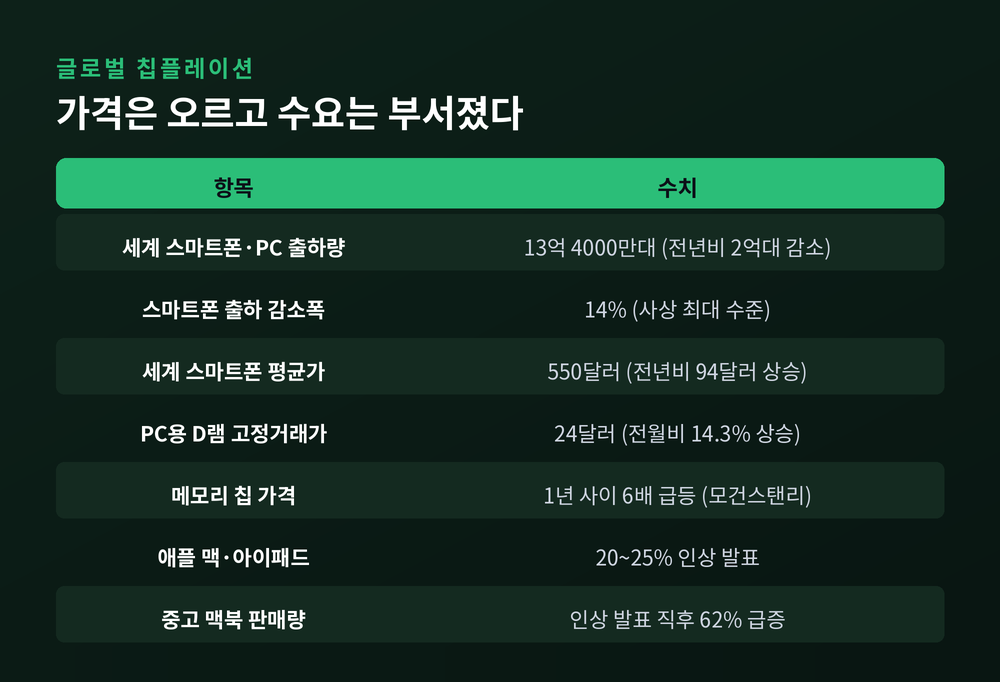
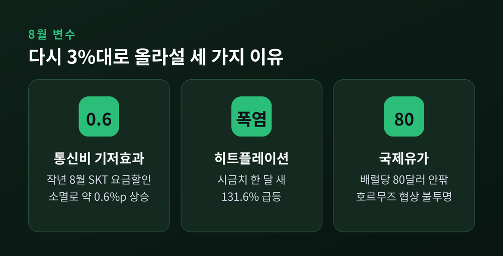

이번 글에서는 2026년 7월 소비자물가동향을 뜯어보겠습니다. 헤드라인 숫자는 분명 내려왔습니다. 그런데 그 안을 들여다보면 전혀 다른 이야기가 나옵니다.
국가데이터처가 8월 4일 발표한 '2026년 7월 소비자물가동향'에 따르면, 지난달 소비자물가지수는 119.77(2020=100)을 기록했습니다. 전년 동월 대비 2.8% 상승입니다.
전월 대비로는 0.2% 내렸습니다. 지난해 11월 이후 8개월 만의 하락 전환입니다.
올해 흐름을 되짚어 보면 이렇습니다. 1월과 2월 2.0%, 3월 2.2%로 안정적이던 물가는 중동전쟁 여파로 4월 2.6%, 5월 3.1%, 6월 3.2%까지 올랐습니다. 7월에 겨우 한 단계 내려온 셈입니다.
둔화를 이끈 것은 두 가지입니다.
첫째는 석유류입니다. 6월 24.7%에서 7월 15.5%로 상승폭이 9.2%p 줄었습니다. 물가 상승 기여도도 0.93%p에서 0.60%p로 축소됐습니다. 경유는 33.7%에서 21.5%로, 휘발유는 23.1%에서 12.6%로 내려왔습니다. 미국과 이란의 종전 양해각서 체결 이후 국제유가가 하락한 영향이 컸습니다. 여기에 정부의 석유 최고가격제도 작용했습니다. 6월 말 7차 인하로 휘발유 1,784원, 경유 1,773원, 등유 1,380원이 상한으로 지정됐고, 재정경제부는 이 조치가 7월 물가를 0.3%p 낮췄다고 추정합니다.
둘째는 농축수산물입니다. 6월 3.2%에서 7월 0.9%로 떨어졌습니다. 배추가 18.4%, 시금치가 21.3% 내리면서 농산물은 아예 2.2% 하락으로 돌아섰습니다. 다만 파(18.3%), 수입쇠고기(8.7%), 쌀(7.9%), 달걀(7.5%)처럼 여전히 높은 품목도 남아 있습니다.

여기까지가 헤드라인입니다. 문제는 그 아래입니다.
공업제품은 3.7% 올랐습니다. 석유류가 진정됐는데도 높은 수준입니다. 그 안을 열어 보면 이유가 나옵니다.
컴퓨터가 25.1% 올랐습니다. 휴대용멀티미디어기기는 22.5% 올랐습니다.
두 품목 모두 석유류(15.5%)를 앞질렀습니다. 석유류는 중동전쟁이라는 극단적 충격의 결과였습니다. 그런데 전자기기는 전쟁 없이도 그보다 더 올랐습니다.
내구재 물가 전체도 6월 3.1%에서 7월 3.9%로 상승폭이 커졌습니다. 전기동력차 역시 6.2% 올랐습니다.
예전에는 물가가 오른다고 하면 기름값과 배춧값을 먼저 떠올렸습니다. 지금은 노트북과 태블릿 가격표를 함께 봐야 하는 시대가 됐습니다.

원인은 메모리 반도체입니다. 그리고 그 뒤에는 AI가 있습니다.
미국 빅테크가 AI 데이터센터 건설에 막대한 자금을 쏟아붓고 있습니다. 삼성전자와 SK하이닉스는 한정된 생산 능력을 고대역폭메모리(HBM) 쪽으로 몰아넣었습니다. 그만큼 스마트폰과 PC에 들어가는 범용 D램, 낸드플래시 공급이 줄었습니다. 남은 물량의 가격은 뛸 수밖에 없습니다.
숫자로 보면 더 분명합니다. 시장조사업체 D램익스체인지에 따르면, 7월 PC용 D램 범용 제품(DDR4 8Gb)의 평균 고정거래가격은 24달러였습니다. 전달 21달러보다 14.3% 오른 값입니다. 조사가 시작된 2016년 6월의 2.9달러와 비교하면 8배가 넘습니다.
모건스탠리는 지난 6월 보고서에서 최근 1년 사이 메모리 칩 가격이 6배 급등했다고 분석했습니다. 반도체 제조사들이 대기업 데이터센터 수요를 우선하면서, 이윤이 상대적으로 낮은 전자기기용 물량은 뒤로 밀렸다는 것입니다. 보고서는 "AI 인프라 병목 현상으로 전자기기 제조업체들의 이윤, 가격 부담, 클라우드 비용, 물가 상승 등의 문제로 확산하고 있다"며 "이 위기는 거시경제적 우려 사항이 됐다"고 짚었습니다.
정리하면 이렇습니다. AI 데이터센터 투자 → HBM 집중 생산 → 범용 메모리 공급 부족 → 제조사 원가 상승 → 소비자 가격표. 네 단계를 거쳐 실리콘밸리의 투자 경쟁이 우리 집 책상 위 물가로 도착한 셈입니다.

이 현상에는 이미 이름이 붙었습니다. 칩플레이션(chipflation)입니다.
부담은 한국만의 것이 아닙니다. 시장조사업체 IDC는 올해 세계 스마트폰과 PC 출하량이 13억 4,000만 대로 전년보다 2억 대 줄어들 것으로 봤습니다. 스마트폰 출하량 감소폭은 14%로 사상 최대 수준입니다. 메모리가 원가에서 차지하는 비중이 큰 중저가 제품일수록 타격이 큽니다.
IDC는 올해 세계 스마트폰 평균 가격을 550달러로 전망했습니다. 전년보다 94달러 오른 값입니다.
제조사들은 이미 움직였습니다. 애플은 맥 노트북과 아이패드 가격을 20~25% 올리겠다고 밝혔습니다. 소니는 플레이스테이션5를 1만 8,000엔, 닌텐도는 스위치2를 1만 엔 인상했습니다. 델과 마이크로소프트도 인상 대열에 합류했습니다.
소비자는 지갑을 닫는 것으로 답했습니다. 애플이 인상 방침을 발표한 다음 날, 미국 중고 거래 플랫폼 백마켓의 중고 맥북 판매량은 전주 대비 62% 급증했습니다. 카운터포인트리서치에 따르면 글로벌 중고 스마트폰 판매량은 지난해 3% 증가에 그쳤지만, 올 상반기에는 13% 뛰었습니다.
반발도 나타났습니다. 지난 6월 미국 캘리포니아주에서는 삼성전자·SK하이닉스·마이크론 메모리 3사가 D램 가격을 끌어올리기 위해 공동 감산했다는 취지의 집단소송이 제기됐습니다. 니혼게이자이신문은 칩플레이션이 소비를 위축시키는 동시에 반AI 정서까지 자극할 수 있다는 우려를 전했습니다.
이해관계는 이렇게 갈립니다. 메모리 3사와 반도체 수출은 유례없는 호황을 누리고 있습니다. 같은 시각 소비자는 더 비싼 값에 같은 성능의 기기를 사야 합니다. 한 나라 안에서도 수출 지표와 체감 물가가 반대 방향을 가리키는 상황입니다.

헤드라인이 내려온 달에, 오히려 오른 지표가 있습니다.
식료품과 에너지를 제외한 근원물가는 6월 2.5%에서 7월 2.6%로 올랐습니다. 2023년 12월 이후 31개월 만의 최고치입니다. 개인서비스도 3.5%까지 상승폭을 키웠습니다. 외식을 제외한 개인서비스는 4.1%였습니다. 해외단체여행비(20.0%), 국제항공료(21.7%), 보험서비스료(13.4%)가 두드러졌습니다.
이 대목을 두고 iM증권 김명실 연구원은 "7월 물가 둔화는 수요 회복이 약해져 나타난 결과라기보다 에너지 가격 조정에 따른 공급측 요인의 영향이 절대적이었다"고 진단했습니다. 헤드라인이 내려가는 국면에서 근원물가와 개인서비스가 함께 올랐다는 것은, 기조적 물가 압력이 예상보다 견조하다는 의미라는 설명입니다.
쉽게 말하면 이렇습니다. 기름값이 내려서 숫자가 좋아 보인 것이지, 물가의 몸통이 식은 것은 아니라는 뜻입니다.
당장의 변수는 세 가지입니다.
첫째, 통신비 기저효과. 지난해 8월 SK텔레콤이 정보유출 사고로 한 달간 휴대전화 요금 할인을 시행했습니다. 그 할인이 올해는 없으니, 전년 동월 대비 상승률이 자동으로 밀려 올라갑니다. 정부는 이 효과가 8월 물가를 약 0.6%p 높일 것으로 추정합니다. 일부에서는 0.8%p까지 볼 수 있다는 추정도 나와, 크기에 대해서는 견해가 엇갈립니다. 다만 재정경제부는 "통신비 효과는 계속 이어지는 것이 아니라 8월 한 달 원타임으로 나타나는 것"이라며 일시적 요인임을 강조합니다. 그러면서도 "8월 물가가 3%를 넘을 가능성이 있다"고 인정했습니다.
둘째, 히트플레이션. 7월 통계에서는 잠잠해 보였던 밥상물가가 8월 들어 다시 요동칩니다. 한국농수산식품유통공사(aT) 집계로 8월 6일 기준 시금치 100g 소매가는 1,974원이었습니다. 한 달 전 852원 대비 131.6% 급등입니다. 열무는 74%, 오이는 45.27%, 상추는 42.59% 올랐습니다. 조사 시점에 따라 시금치 상승률을 150% 넘게 집계한 곳도 있습니다. 집중호우 뒤 이어진 폭염으로 생육이 부진하고 출하량이 줄어든 탓입니다. 한국은행 분석에 따르면 일반적 고온 충격의 12개월 물가 압력은 0.03%p에 그치지만, 상위 5% 이상의 극한고온에서는 0.56%p까지 확대됩니다.
셋째, 국제유가. 배럴당 80달러 안팎에서 한고비 넘긴 듯 보이지만, 호르무즈 해협을 둘러싼 협상이 여전히 불투명합니다. WTI와 브렌트유는 중동 소식에 따라 하루 3~4%씩 출렁이고 있습니다.
신한투자증권 문서현 연구원은 "8월에는 국제유가 상승이 시차를 두고 반영되고 지난해 통신요금 감면에 따른 기저효과로 헤드라인 물가가 재차 3%대로 반등할 가능성이 높다"고 내다봤습니다.

한국은행은 8월 4일 이지호 부총재보 주재로 물가상황점검회의를 열었습니다. 8월 물가가 7월보다 높아질 것으로 보면서, 이 부총재보는 "비용 충격의 전이와 수요 측 압력 확대로 근원 품목들이 높은 상승률을 지속할 가능성이 있다"며 경계심을 밝혔습니다.
시장은 금리를 봅니다. 한국투자증권 안재균 연구원은 "헤드라인 물가 안정보다 근원물가 추가 상승에 주목해야 한다"며 물가 지표만 놓고 보면 8월 추가 기준금리 인상 가능성이 높다고 진단했습니다. 지난달 인상에 이은 연속 인상 관측까지 나옵니다.
정부 쪽 대응은 두 갈래입니다. 이형일 재정경제부 1차관은 물가관계차관회의에서 중동전쟁 불확실성, 통신비 기저효과, 폭염 등 상방 리스크가 상존한다며 전 부처의 총력 대응을 당부했습니다. 추석을 앞두고 9월 발표를 목표로 '추석 민생안정 대책'도 준비 중입니다.
칩플레이션에 대해서는 이미 별도 조치가 나와 있습니다. 공공기관의 불용 PC를 수리해 취약계층 지원에 돌리고, 저소득층 가구 학생을 대상으로 PC·노트북 구매 지원 사업을 확대하는 방안입니다. 지난해 중앙정부가 폐기한 PC 2만 2,000대 가운데 약 58%는 수리하면 기본 작업이 가능한 것으로 추정됐습니다.
솔직히 이 대책들이 25%라는 상승률을 되돌리기는 어렵습니다. 메모리 가격은 국내 정책으로 결정되는 변수가 아니기 때문입니다. 정부도 그 한계는 인정하고 있는 것으로 보입니다.
정리하면 이렇습니다.
7월 물가 2.8%는 좋은 소식이 맞습니다. 다만 그 숫자를 만든 것은 기름값과 배춧값이었고, 정책 효과였고, 무엇보다 일시적이었습니다. 같은 달에 컴퓨터는 25.1% 올랐고 근원물가는 31개월 만에 가장 높았습니다.
"헤드라인은 내려왔지만, 물가의 몸통은 식지 않았습니다."
8월 숫자는 9월 초에 나옵니다. 그때 우리가 확인하게 될 것은 아마 이 문장의 답일 것입니다. 그리고 그 답과 무관하게, AI가 만든 가격표는 당분간 우리 곁에 머무를 듯합니다.
면책 안내: 이 글은 공개된 통계와 언론 보도를 정리한 정보 제공 목적의 콘텐츠이며, 투자 권유나 특정 종목·자산에 대한 매매 권유가 아닙니다. 본문에 인용된 전망과 분석은 각 기관·연구원의 견해이며 실제 결과와 다를 수 있습니다. 투자 판단과 그 결과에 대한 책임은 투자자 본인에게 있습니다.